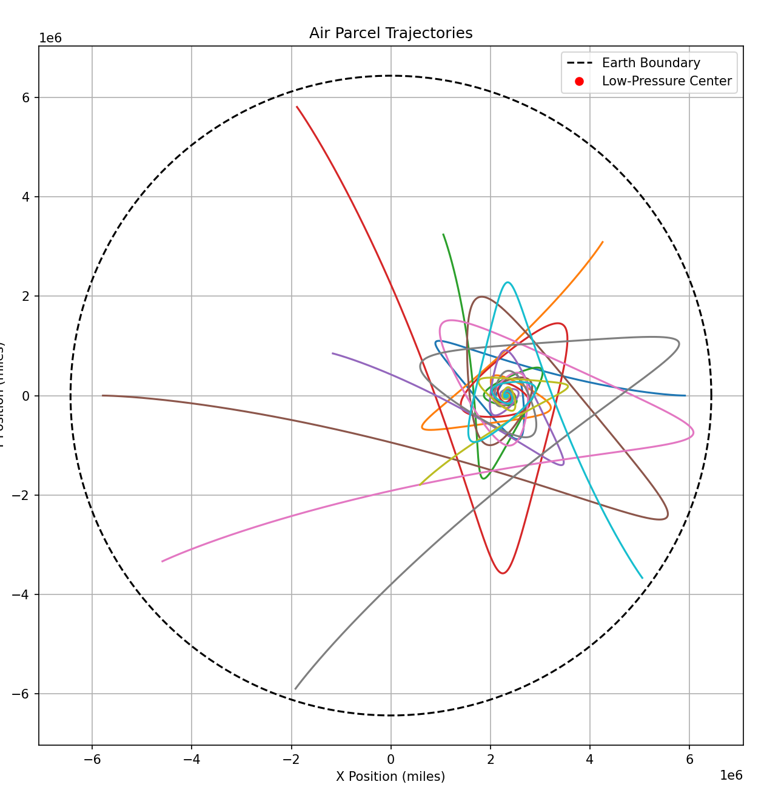

Modeling a Hurricane and Deriving Sudo-Forces
0. Preface
Hurricanes are a very interesting force of nature that arise party because of something you might not ever expect, the rotation of the Earth. That's right, hurricanes wouldn't form if it weren't for the spin of the Earth, well neither would you for that matter... but this is besides the point.
By the end of this blog I hope that both you and I will have a deeper, more mathematical understanding of hurricanes and how they behave. Naturally following from that we will also better understand of mysterious sudo-forces, like the Corriolis effect.
1. Defining the Problem
A hurricane forms when a low-pressure zone develops at a point on the earth, which then attracts the air to it. But due to the earth’s rotation, the pseudoforces that influence the air particles as they attract to the low-pressure zone cause the air to swirl.
We will make this problem more tractable by assuming the earth is a flat disk (no conspiracy theories please!) spinning at some arbritray rate.
Let us assume the low-pressure center has a position vector that is fixed to a particular location on the earth \( \mathbf{r}_0(t) \) away from the “North pole,” which is the center of the disk. Suppose the low-pressure zone establishes a vector field that we can imagine pulls on parcels of air with a force \[ \mathbf{F}_{\text{Low}}(\mathbf{r}, t) = -F_0(\mathbf{r} - \mathbf{r}_0(t)) \]
where \(F_0\) = [N/m]
Let's imagine a single particle of air which is initially moving with the earth. These air particles also experience a drag force when they move relative to the earth’s surface: \[ \mathbf{F}_{\text{Drag}} = -c_s(\mathbf{v} - \mathbf{v}_e(t)) \]
where \(\mathbf{v}\) is the velocity of the air particle and \(\mathbf{v}_e(t)\) is the velocity of the Earth at the poistion of the particle.
Before we solve this problem, we have to ask a fundamental question: Are these the only forces acting on the parcel of air? (Not including gravity)
Well, no... There are three of what physicists call "sudo-forces" in this problem. These forces, like the name impies, are not really real, and they definitely are not fundamental. While the force of a low-pressure zone, and the force of drag on the particles of air are well defined and easy to understand, sudo-forces are much more vague and mysterious. In order to understand the problem better, lets define what sudo-forces are.
2. Deriving Sudo-Forces
Sudo-forces arise from rotating frames. An observer that sits on a rotating frame that is large enough might not notice that they are rotating (Like you on the Earth), so they will percive forces that are not fundamental. These forces are called the Euler, Centrifugal and Corriolis force. Let's find out how to mathemtaically describe these forces.
Let's first imagine two coordinate systems, one which is stationary that we will call \(\mathbf{e}_x\) and \(\mathbf{e}_y\) , the second coordinate system \(\mathbf{\tilde{e}}_x\) and \(\mathbf{\tilde{e}}_y\) which is rotating at angle \(\mathbf{\phi}(t) \) with respect to the first coordinate system. We will call the first frame the "normal frame" and the second frame the "\(\sim\) frame"
Let's also imagine a force vector we will call \(\mathbf{F}_A\) in the normal frame and \(\mathbf{F}_B\) in the /(/sim/) frame. These forces are the exact same, it is only our perception of this force that changes. To make this easier to imagine think about how your computer infront of you is upright when looking at it normally, but when you tilt your head, the computer appears to be slanted, and if you rotate your head with constant rotation velocity the computer will also appear to rotate with that same constant rotation velocity.
We can equate these two forces usign a "rotation tensor" \(\mathbf{R}(\phi)\). So our equaition equating these forces becomes: \[\mathbf{F_A} = \mathbf{R}(\phi)[\mathbf{F_B}]\]
Our rotation equation applies the following principles to \(\mathbf{\widetilde{e}}_x\) and \(\mathbf{\widetilde{e}}_y\): \[ \mathbf{\tilde{e}}_x = \cos(\phi)\mathbf{e}_x + \sin(\phi)\mathbf{e}_y \] \[ \mathbf{\tilde{e}}_y = -\sin(\phi)\mathbf{e}_x + \cos(\phi)\mathbf{e}_y \]
Deriving this equations with respect to time gives: \[ \mathbf{\dot{\tilde{e}}}_x = -\sin(\phi)\dot{\phi}\mathbf{e}_x + \cos(\phi)\mathbf{e}_y \] \[ \mathbf{\dot{\tilde{e}}}_y = -\cos(\phi)\dot{\phi}\mathbf{e}_x - \sin(\phi)\mathbf{e}_y \]
This simplifies to: \[ \mathbf{\dot{\tilde{e}}}_x = \dot{\phi}\mathbf{\tilde{e}}_y \] \[ \mathbf{\dot{\tilde{e}}}_y = -\dot{\phi}\mathbf{\tilde{e}}_x \]
Since we know that \(\mathbf{r} = x\mathbf{e}_x + y\mathbf{e}_y = \tilde{x}\mathbf{\tilde{e}}_x + \tilde{x}\mathbf{\tilde{e}}_y \) is the position of the point our force vector starts.
Differentiating \(\mathbf{r}\) with respect to time gives: \[ \mathbf{v} = \dot{\tilde{x}} \mathbf{\tilde{e}}_x + \tilde{x} \dot{\phi} \mathbf{\tilde{e}}_y + \dot{\tilde{y}} \mathbf{\tilde{e}}_y - \tilde{y} \dot{\phi} \mathbf{\tilde{e}}_x \]
Differentiating the velocity \(\mathbf{v}\) with respect to time gives: \[ \ddot{\mathbf{r}} = (\ddot{\tilde{x}} \mathbf{\tilde{e}}_x + \ddot{\tilde{y}} \mathbf{\tilde{e}}_y) + \ddot{\phi}(\tilde{x} \mathbf{\tilde{e}}_y - \tilde{y} \mathbf{\tilde{e}}_x) + \dot{\phi}^2(\tilde{x} \mathbf{\tilde{e}}_x + \tilde{y} \mathbf{\tilde{e}}_y) + 2\dot{\phi}(\dot{\tilde{x}} \mathbf{\tilde{e}}_y - \dot{\tilde{y}} \mathbf{\tilde{e}}_x) = \frac{\mathbf{F}_A}{m} \]
Then: \[ \frac{F_B}{m} = \tilde{a} + \ddot{\phi} (\mathbf{e}_z \times \mathbf{\tilde{r}}) - \dot{\phi}^2 \mathbf{\tilde{r}} + 2\dot{\phi} (\mathbf{e}_z \times \mathbf{\tilde{v}}) \]
Finally: \[ m\tilde{a} = F_B = m\ddot{\phi} (\mathbf{e}_z \times \mathbf{\tilde{r}}) + m\dot{\phi}^2 \mathbf{\tilde{r}} - 2m\dot{\phi} (\mathbf{e}_z \times \mathbf{\tilde{v}}) \]
Where:
\( m\ddot{\phi} (\mathbf{e}_z \times \mathbf{\tilde{r}}) \) is called the Euler force.
\( m\dot{\phi}^2 \mathbf{\tilde{r}} \) is called the Centrifugal force.
\( -2m\dot{\phi} (\mathbf{e}_z \times \mathbf{\tilde{v}}) \) is called the Corriolis effect.
Now that we have define what Sudo-Forces are, we can move on to modeling a hurricane on a rotating flat Earth.
3. Setting Up a System of Equations
The first step we need to do before coding up our hurricane model is to define how any given particle will move. Let's use Newton's Third Law and take the sum of the forces.
\[ \sum \mathbf{F} = m\frac{dv}{dt} = \mathbf{F}_{\text{Drag}} + \mathbf{F}_D + \mathbf{F}_{\text{Centrifugal}} + \mathbf{F}_{\text{Coriolis}} \]
Note here how there is no Euler force acting on our particle, this is because the Earth's rotation is constant, so the \(\ddot{\phi}\) term equals zero.
Now we break up our forces into x and y conponents, and if we take into account our position vectors, our System Of Equations becomes: \[ \begin{cases} \frac{dx}{dt} = v_x \\ \frac{dy}{dt} = v_y \\ \frac{dv_x}{dt} = -F_0 (x - x_0) - c_s v_x + 2\Omega v_y - \Omega^2 x \\ \frac{dv_y}{dt} = -F_0 (y - y_0) - c_s v_y - 2\Omega v_x - \Omega^2 y \end{cases} \]
4. Simulating the Motion of Air Parcels
Now that we have the system of equations, we can proceed with simulating the motion of air parcels. Using Python, we can numerically solve the equations using the solve_ivp function from SciPy. This function solves the initial value problem for systems of ordinary differential equations (ODEs).
The parameters we are using in this simulation are based on real-world values for the drag coefficient, Coriolis parameter, and the Earth’s angular velocity. We assume a low-pressure center at a fixed position, represented by \( r_0 \), and initialize the air parcels at random locations within the Earth's boundary.
Our Python code to solve this system of equations looks like this:
import numpy as np
import matplotlib.pyplot as plt
from scipy.integrate import solve_ivp
F0 = 1.34e-7 # kg/s^2
Cs = 1.736e-4 # kg/s
r0 = np.array([2.416e6, 0 ]) # m
Omega = 7.2722e-5 # rad/s
Re = 6437378 # m
time = (0,172800) # 0 to 2 days in seconds
dt = 1 # 1 second
t_eval = np.arange(time[0], time[1], dt)
np.random.seed()
parcels = 10
angles = np.linspace(0, 2 * np.pi, parcels, endpoint=False)
radii = np.sqrt(np.random.uniform(0, Re**2, parcels))
x_init = radii * np.cos(angles)
y_init = radii * np.sin(angles)
initial_conditions = []
for i in range(parcels):
x0, y0 = x_init[i], y_init[i]
vx0, vy0 = 0, 0
initial_conditions.append([x0, y0, vx0, vy0])
def SOEs(t, state):
x, y, vx, vy = state
deltaX = x - r0[0]
deltaY = y - r0[1]
Fx = -F0 * deltaX - Cs * vx + 2 * Omega * vy - Omega**2 * x
Fy = -F0 * deltaY - Cs * vy - 2 * Omega * vx - Omega**2 * y
return [vx, vy, Fx, Fy]
trajectories = []
for ic in initial_conditions:
sol = solve_ivp(SOEs, time, ic, t_eval=t_eval, method='RK45', max_step=1000)
trajectories.append((sol.y[0], sol.y[1]))
The output of this simulation is a set of trajectories representing the movement of air particles under the influence of the forces we discussed earlier.
5. Results and Visualization
The figure below shows the trajectories of the air particles, with the Earth boundary shown as a dashed circle and the low-pressure center marked with a red dot. As the parcels move, they experience the Coriolis effect, which causes their paths to curve as they are deflected by the Earth's rotation.
The plot provides a visual representation of how air parcels swirl around a low-pressure zone, simulating the early stages of a hurricane formation.
6. In the End...
By simulating the motion of air particles in a rotating frame of reference, we can observe how pseudo-forces like the Coriolis effect and centrifugal force influence the trajectory of these particles. The combined effect of these forces is what causes the characteristic swirling pattern seen in hurricanes.
While this model is simplified—assuming a flat Earth and a fixed low-pressure center—it provides valuable insights into the dynamics at play. In reality, a hurricane is a much more complex system with additional factors such as changes in air pressure, moisture, and heat transfer.
In future blog posts, we could extend this model by incorporating additional meteorological factors, or by using a spherical Earth model for a more accurate representation.